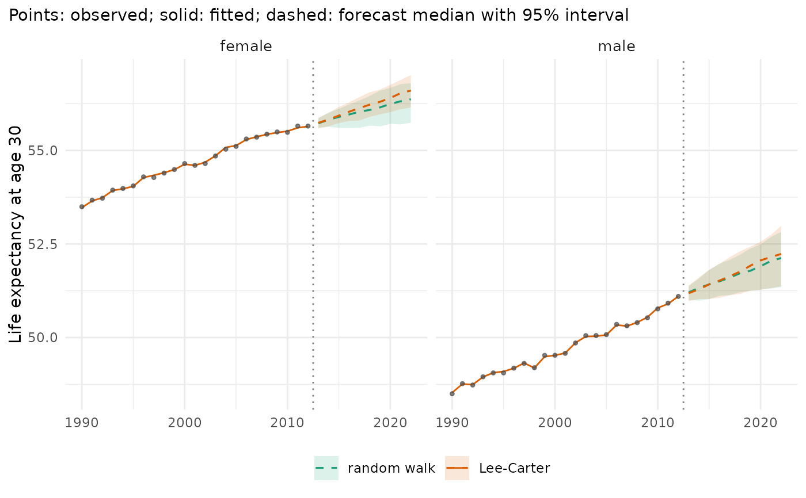

Helpers for the comparisons that most analyses make: several models in one backtest, their scores side by side, and one quantity of several forecasts (models, scenarios, jump-off choices) as a table or a figure.
Usage
mt_compare(
specs,
data,
origins = NULL,
h = 10,
n_draws = 200,
quantities = NULL,
...
)
mt_score_table(
backtest,
metrics = c("crps", "cov95"),
targets = NULL,
by = "model",
digits = 3,
hierarchy = NULL
)
mt_compare_forecasts(
forecasts,
quantity = c("life_expectancy", "asr", "deaths", "rate", "lifespan_variation"),
periods = NULL,
at = NULL,
ages = NULL,
strata = NULL,
level = 0.95,
digits = 1,
wide = TRUE,
exposure = NULL,
measure = "edagger"
)
mt_plot_compare(
forecasts,
quantity = c("life_expectancy", "rate", "asr", "lifespan_variation"),
at = NULL,
ages = NULL,
strata = NULL,
periods = NULL,
level = 0.95,
data = NULL,
measure = "edagger"
)Arguments
- specs
A named list of model specifications (or of
list(spec = , prep = )).- data
Observed data shown as points (
mt_plot_compare(); default: the training data of the first forecast).- origins, h, n_draws, quantities
Passed to
mt_backtest().- ...
Further arguments of
mt_backtest().- backtest
An
mt_backtest()result.- metrics
Score columns of
mt_score(), for example"crps","rmse","cov80","cov95".- targets
Targets to show (default: all in the backtest).
- by
Columns that define the rows (default
"model").- digits
Significant digits (
mt_score_table()) or decimals (mt_compare_forecasts()).- hierarchy
Optional
mt_hierarchy(): scores are then given separately for the bottom series, the aggregates and the grand total (columnlevel).- forecasts
A named list of mt_draws objects or mt_data objects (observed values).
- quantity
"life_expectancy","asr"(per 100,000),"deaths"(summed over the ages, with the exposures of the last observed year unlessexposureis given; forecasts only),"rate"(death rates of the ages inages) or"lifespan_variation"(the indexmeasureoflifespan_variation()).- periods
Years shown (for the plot a range
c(first, last), or one year: then medians and intervals per stratum side by side).- at
Age for life expectancy and lifespan variation.
- ages
Age labels for
quantity = "rate".- strata
Stratum labels shown (default all).
- level
Level of the central interval.
- wide
One column per forecast (
TRUE) or a long table.- exposure
Future exposures for
quantity = "deaths"(seemt_deaths()).- measure
Index of lifespan variation for
quantity = "lifespan_variation"(seelifespan_variation()).
Value
mt_compare(): an mt_backtest table. mt_score_table(),
mt_compare_forecasts(): a data.table. mt_plot_compare(): a ggplot
object.
Details
mt_compare()runsmt_backtest()for each specification in a named list on the same data and origins and returns one backtest whosemodelcolumn holds the names (in the order given). An element can be a model specification orlist(spec = , prep = )with its own preprocessing. Withoutorigins, the default origins ofmt_backtest()are chosen once for all models, with enough training years for the model that needs the most.mt_score_table()gives the mean scores of a backtest for every target it holds side by side: log death rates without suffix, life expectancy with_le(years), the age-standardised rate with_asr, and differences between strata (contrastinmt_backtest()) with_le_gapand_asr_gap. The same model with different preprocessing gets one row per pipeline (columnprep, as inmt_score()).mt_compare_forecasts()gives one quantity of several forecasts (mt_draws) or observed data (mt_data, with Poisson intervals) as "median (lower-upper)", one column per forecast (empty where a forecast has no value for the periods shown).mt_plot_compare()draws the same quantity of several forecasts in one figure, one colour per forecast: medians (dashed), intervals, fitted values (solid) and the observed values (points). Withperiodsaround the last observed year it shows the jump-off of each forecast.
Examples
x <- mt_example(deaths = "single", years = 1990:2012)
models <- list("random walk" = rwd(), "Lee-Carter" = lee_carter())
bt <- mt_compare(models, x, origins = c(2005, 2007), h = 5, n_draws = 50,
quantities = "life_expectancy")
mt_score_table(bt)
#> model crps cov95 crps_le cov95_le
#> <fctr> <num> <num> <num> <num>
#> 1: random walk 0.0564 0.948 0.0801 1
#> 2: Lee-Carter 0.0355 0.907 0.0746 1
fc <- list("random walk" = mt_forecast(mt_fit(rwd(), x), h = 10, n_draws = 100, seed = 1),
"Lee-Carter" = mt_forecast(mt_fit(lee_carter(), x), h = 10, n_draws = 100, seed = 1))
mt_compare_forecasts(fc, periods = 2022)
#> Key: <label, period>
#> label period random walk Lee-Carter
#> <char> <num> <char> <char>
#> 1: female 2022 56.4 (55.7-56.8) 56.6 (56.1-57.0)
#> 2: male 2022 52.1 (51.4-52.8) 52.2 (51.4-53.0)
if (requireNamespace("ggplot2", quietly = TRUE)) mt_plot_compare(fc, data = x)
